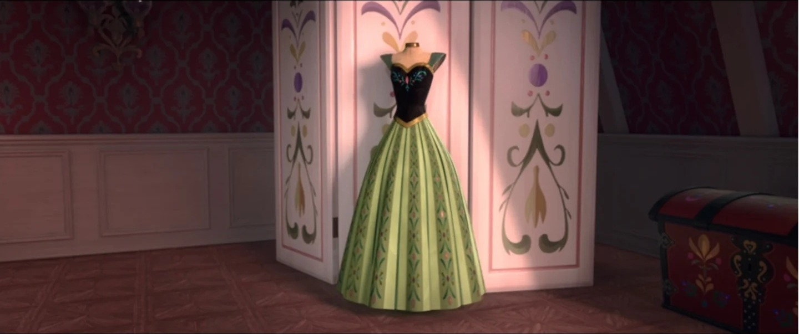
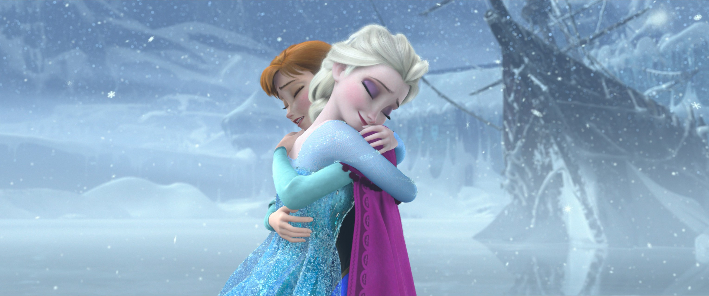

小说总览


📖 这一页讲什么
安娜在官方小说中的故事经历，补充了电影中没有展现的内心世界与背景细节。这一页梳理她在几本核心小说中的故事经历、角色定位、以及这些小说如何深化我们对安娜的理解。（注：只梳理安娜的故事经历与设定，不引用原文。）
📖 Frozen Junior Novel：电影的血肉
定位：电影小说化（Junior Novelization），与F1电影正典平行。
安娜的故事经历：Junior Novel把安娜每个关键抉择前的心理都写了出来。加冕日清晨，她对着镜子练习社交礼仪，既兴奋又紧张；遇到汉斯时，她的「一见钟情」不是天真，而是十几年孤独后的「终于有人关注我」的感动；北山寻姐途中，她的「冲动」不是鲁莽，而是「太想见到姐姐，所以先行动再说」的急切；被汉斯背叛后，她的「心碎」不是爱情的破灭，而是「又一次被抛弃」的创伤重现。Junior Novel让安娜从「情节推动者」变成「有血有肉的承受者」——我们跟着她的心跳经历加冕日的每一秒，也因此更懂她为何那样乐观、那样冲动、那样不放弃。
📖 Conceal, Don't Feel：交替视角的深度
定位：改写小说（Twisted Tale），非正典，但提供了深度的心理分析。
安娜的故事经历：在《Conceal, Don't Feel》的改写设定中，安娜婴儿期被托付山间小镇Harmon的面包师抚养，女王伊杜娜伪装成「姨母Freya」暗中探望。这个设定让安娜的「孤独」有了更深刻的背景——她不仅被姐姐疏远，还被父母「送走」。小说以交替视角还原了安娜的成长：她在面包师家庭中长大，不知道自己的真实身份；她性格乐观、善良，与小镇上的人都相处得很好；但她始终有一种「缺失感」——她不知道自己是谁、来自哪里。当她最终与艾莎相遇、发现自己的真实身份时，她的「不放弃姐姐」有了更深刻的动机——她不仅是在寻找姐姐，也是在寻找「自己是谁」。这本小说补充了电影中没有的安娜视角：她的「乐观」不是天性，而是在「被抛弃」的经历中仍然选择相信美好的韧性；她的「冲动」不是鲁莽，而是「太想找到归属，所以先行动再说」的急切。
📖 Forest of Shadows：F2前夜的噩梦
定位：F2前传小说，正典补充。
安娜的故事经历：《Forest of Shadows》描写安娜在F2前夜做噩梦、担心艾莎再次离开。这本小说的核心是安娜的「分离焦虑」——F1结局姐妹和解后，安娜终于拥有了姐姐，但她潜意识里害怕「姐姐会再次离开」。她的噩梦不是关于魔法或怪物，而是关于「姐姐又不理我了」。这种「分离焦虑」解释了F2中安娜的一些行为：她为什么坚持要跟艾莎一起去魔法森林、为什么在艾莎独自渡海后那么焦虑、为什么在以为失去艾莎后那么崩溃。这本小说补充了电影中没有的安娜心理：她的「不放弃」不仅是乐观，也是「害怕再次失去」的恐惧驱动。她的「行动力」不仅是勇敢，也是「用行动来对抗焦虑」的心理防御。
📖 Polar Nights：F2后的日常
定位：F2后传小说，正典补充。
安娜的故事经历：《Polar Nights》描写安娜在F2后作为阿伦黛尔女王的日常生活。这本小说的核心是安娜的「身份转变」——从「公主」到「女王」，从「姐姐的追随者」到「独当一面的领导者」。她面临着「国务 vs 个人生活 vs 与克里斯托夫的感情」的困惑，也面临着「如何在没有姐姐的情况下治理王国」的挑战。小说展现了安娜的「执政哲学」：「做下一件对的事」——不是宏大的愿景，而是一步一行的坚持。她用真诚与行动力赢得了臣民的信任，也用「连接者」的天赋建立了与北地人的友好关系。这本小说补充了电影结局后的安娜状态：她的「女王」身份不是终点，而是新的起点——她仍然在学习、仍然在成长、仍然在用「做下一件对的事」的哲学面对每一天的挑战。
📖 All Is Found：母亲的传说
定位：F2前传小说，聚焦伊杜娜的故事，正典补充。
安娜的故事经历：《All Is Found》虽然聚焦母亲伊杜娜，但也展现了安娜的「女王」视角。在小说的框架故事中，安娜以女王身份与艾莎共同守护两国友谊，她听母亲的故事、理解母亲的选择、继承母亲的「连接者」天赋。这本小说补充了安娜的「代际传承」：她的「连接者」天赋不是偶然，而是来自母亲伊杜娜的北地血脉——伊杜娜用爱救起阿格纳尔、用爱守护两个女儿的秘密，正是sisterly与maternal之爱在血脉里的回响。安娜最终成为「连接人类与北地的女王」，正是对母亲「连接者」身份的继承与升华。
📖 Dangerous Secrets：父母的故事
定位：F1前传小说，聚焦阿格纳尔与伊杜娜的爱情故事，正典补充。
安娜的故事经历：《Dangerous Secrets》虽然聚焦父母，但也通过「框架故事」展现了安娜的视角。安娜听父母的爱情故事、理解父母的选择、继承父母的「勇气与爱」。这本小说补充了安娜的「家庭背景」：她的「乐观」来自母亲伊杜娜的北地热情，她的「行动力」来自父亲阿格纳尔的勇敢担当，她的「不放弃」来自父母「跨越种族与偏见的爱情」的榜样。安娜最终成为「连接者女王」，正是对父母「跨越分歧的爱」的继承与升华。
📊 小说对安娜的补充
| 小说 | 定位 | 补充了什么 |
|---|---|---|
| Junior Novel | F1电影小说化 | 安娜的内心活动与决策心理 |
| Conceal, Don't Feel | 改写小说 | 安娜的「被抛弃」创伤与身份寻找 |
| Forest of Shadows | F2前传 | 安娜的分离焦虑与噩梦 |
| Polar Nights | F2后传 | 安娜的女王日常与执政哲学 |
| All Is Found | F2前传 | 安娜的代际传承与连接者天赋 |
| Dangerous Secrets | F1前传 | 安娜的家庭背景与性格来源 |
